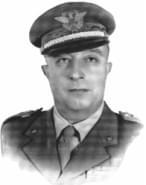
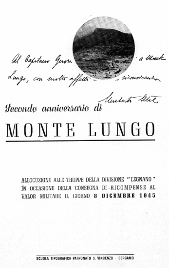

|  |
Il Generale
Umberto Utili
(1895 - 1952) |
|
| |
|
Ricordo del Generale Utili a 25 anni dalla morte (1952 - 1977) |
Il Generale Umberto Utili e la vicenda di Monte Lungo
La lettera che non fu scritta mai
"Caro Generale
E’ con vivo rincrescimento che ho firmato il decreto col quale Ella, sotto la data di oggi, viene collocata nella riserva per raggiunti limiti di et�. Il contributo che Ella ha dato, servendo con fedelt� e capacit� professionale per cinquant'anni l'Esercito ed il Paese, Le hanno meritato unanimi riconoscimenti, e la Sua opera non sarà certo dimenticata.
Ricordo il valore che Lei ha dimostrato fin da quando, giovane ufficiale dartiglieria nella guerra 1915-18, fu ininterrottamente al fronte, e sempre al comando diretto di reparti, rotando nei vari scacchieri ed in quasi tutte le specialit� della Sua Arma. Della Sua permanenza per quasi diciotto mesi in unit� bombardieri, della Sua vita di trincea attorno a Gorizia, sul Carso e allOrtigara, a distanza dal nemico di lancio di bomba a mano, Ella ha tratto allora quale senso di realt� della guerra e del sacrificio della fanteria, che ha sempre più temprato poi il Suo carattere militare e formate le Sue coraggiose aspirazioni.
La concessione della prima decorazione al valor militare nel 1916, ha premiato la Sua intelligenza, la Sua calma e lo sprezzo del pericolo nel dirigere il fuoco delle Sue armi in azioni particolarmente importanti. Ricordo la seriet� dei suoi studi alla Scuola di Guerra ed alla Scuola dApplicazione di Artiglieria; il lodevole servizio prestato come Ufficiale di Stato Maggiore presso Grandi Unit� territoriali ed al comando di reparti; la Sua metodica attività e la Sua influenza esercitata al centro del Corpo stesso.
Nel grado di Colonnello Ella ha egregiamente ricoperto gli incarichi di Comandante il 19� Rgt. Artiglieria "Gavinana", di Comandante la Scuola Centrale di Artiglieria, dell'Artiglieria del IV e XXIV Corpo d'Armata, di capo Ufficio Comando Artiglieria del C.S.I.R., di capo di Stato Maggiore del XXXV Corpo d'Armata. In tutti i suddetti incarichi Ella si � distinta per il Suo ascendente fatto di superiorit� spirituale, di cultura professionale non comune e di esatto svolgimento dei Suoi compiti specifici.
Una prima medaglia d'argento al valor militare, decretataLe in Africa Orientale per la brillante azione di Mai Ceu; una seconda sul fronte greco-albanese allorch�, unitosi ad una colonna di fanteria, Ella fu parte preminente alla conquista della citt� di Erzeche; una terza sul fronte russo, quando contribuiva decisamente all'esito vittorioso della battaglia che Lo vide valoroso e sereno, perfetto collaboratore di forte tempra e di incrollabile fede. Sono i riconoscimenti più palesi di una non comune esperienza di comando in pace ed in guerra, di una grande conoscenza dello scibile militare, maturate attraverso lo studio e la riflessione, e vivificate dalla Sua forte personalit�, dal Suo coraggio e dal Suo valore.
Le di lei funzioni di Generale addetto allo Stato Maggiore Esercito e di Capo Reparto Operazioni, di capo Missione Collegamento con il XV Gruppo Armate Anglo Americane, non hanno fatto che perfezionare le di Lei doti militari e l'attitudine al comando di Grandi Unit�; ma la Sua prova migliore � stata senza dubbio quella di aver saputo ridare spirito e fiducia ai soldati, e guidarli, col Corpo Italiano di Liberazione ed il Gruppo di Combattimento "Legnano", in quella campagna vittoriosa, che ha risollevato il nome del nostro Esercito nell'ora più dura.
Ben meritata � stata la Sua promozione a Generale di Corpo dArmata e la Sua assegnazione al Comando del Territorio Militare di Milano …"
Di questo genere, se non tale appunto, avrebbe potuto essere il cosiddetto "autografo", solito ad indirizzarsi dal capo dello Stato (Regno o Repubblica), ai Generali di Corpo d'Armata che venivano mandati in pensione; forse la lettera poteva anche allungarsi, per il Generale Umberto Utili, di altri incarichi e benemerenze, in posti di più singolare responsabilit�, quasi certamente, il sommo della scala militare. Ma non fu cos�; la lettera, come ognun vede, � puramente immaginaria, e non fu scritta mai …
La triste mattina del 21 maggio 1952, in una faticosa ricognizione di frontiera, affrontata a malgrado della neve, del freddo e delle non perfette condizioni di salute, Egli fu colto dal male che doveva, dopo ansie indicibili, speranze vane ed un lungo soffrire, portarLo alla tomba.
"La neve copriva i monti e la marcia era lunga e faticosa": cos� scrive il generale Biglino, il più caro dei Suoi amici, che in quei giorni, al comando del Territorio di Padova, partecipava alla esercitazione; "gli ufficiali che Lo accompagnavano, visti sul Suo volto i segni della fatica, cercarono di persuaderlo a tornare indietro. Invano, perch�, come mi disse poi lo stesso Utili, Egli voleva vedere "fin dove arrivava la bestia". Croll�, e fin dal primo momento non ebbe dubbi sulla gravit� del male. Ci� malgrado, incontrato un reparto di alpini, volle, prima di incrociarlo, scendere dalla barella sulla quale era trasportato. I soldati dovevano vederlo in piedi …".
La legione sacra
"Fino a quando esister� il buon seme ed il cattivo seme – ricordiamo la parabola evangelica del seminatore – e la verit� sarà mista all'errore; fino a quando grandi rivolgimenti sociali e politici renderanno possibile ogni bene come ogni male, purtroppo, il tremendo spettro della guerra incomber�, quale oscura nemesi, sul destino di questa povera umanit�" (gen. Ronco).
Allora, vien fatto di sperare, che sia ancora "santo e lagrimato il sangue / per la Patria versato", quanto quello di qui, in questo Sacrario, come ogni anno, come sempre.
E’ perci� di questa luce che si illumina lo scorcio di quel fine anno 1943, quando in mezzo alla dispersione di ogni valore materiale e morale, resiste ancora un piccolo germe non morto; un germe ancora capace di schiudersi ed esprimere da s� la forza di risalire la china del più grande fallimento che la nostra storia nazionale ricordi.
Non andarono vane inenarrabili insistenze del nostro governo e dei capi militari di allora, per ottenere dagli Anglo Americani di ammettere una Unit� combattente italiana al seguito delle operazioni nella penisola. Era umano per�, che in quel morente autunno di sconforto e desolazione, fosse scomparso l'entusiasmo di combattere, se ancora ne rimaneva fra il 25 luglio e l'8 settembre; erano giorni tristi, dominati non da una atmosfera politica di esaltazione dei valori spirituali ed ideali, bens� dalla angosciosa situazione armistiziale e dell'immediato "cambiamento di fronte", fatta più per deprimere che per risospingere all'azione, non solo le poche truppe rimaste, ma anche i quadri.
Cionondimeno, l'unica tavola di salvezza nel naufragio, fu per i combattenti del I Raggruppamento Motorizzato, per gli ufficiali, per gli studenti, la fedelt� al Re ed al giuramento prestato; era la sacra suprema legge dell'ubbidienza, senza di che non esiste compagine di qualsiasi esercito. "Poteva essere giusto od errato, poteva piacere o non piacere, ma il dovere verso la Patria, in quella tragica situazione, imponeva di utilizzarlo. Ebbene, gli odii settari che si autodefinivano nazionali, si accanirono a demolirlo, incapaci di rendersi conto che nessun sentimento improvvisato avrebbe potuto sostituire, in una collettivit�, un sentimento atavico, prodotto di una storia secolare" (gen. Berardi).
Fu cos� che quel pugno di uomini generosi fu sottoposto all'armamento ed equipaggiamento che, pur per il meglio che si poteva trovare in quelle deprecate circostanze, sapeva di una improvvisazione e di una incompletezza tali, che non ci sollevavano certamente agli occhi dei nuovi alleati.
Il più venne lasciato alla iniziativa individuale dei comandanti, alla esperienza ed al buon senso per chi ne aveva, sicch� quell'incredibile miracolo di avere saputo riportare in linea compagnie e plotoni dopo poche settimane dal tracollo, spetta a quei valorosi ufficiali, specie dei gradi minori, che nonostante le incoerenze politiche, avevano conservata una ardente fede patriottica, l'alta coscienza del dovere e della responsabilit�, il sentimento e l'onore.
Gli eroici battaglioni del 67� Fanteria, i Bersaglieri del LI e l'XI Artiglieria, Genieri e truppe dei Servizi, erano ora gli eredi di quella sacra legione garibaldina, che ottant'anni prima, aveva bagnato del proprio sangue gli stessi campi di battaglia.
Bisognava ad ogni costo mandare gli Italiani a combattere, e per comandare quel simbolico contingente, fu scelto "un volonteroso generale di brigata", aggettivo abbastanza modesto per Colui, che ebbe il coraggio di riportare al fuoco, il fuoco dei tedeschi, quei cinquemila uomini. Altri avevano rifiutato, o non si ritenne, in alto, di bruciare a quel banco di prova; e cos� il generale Vincenzo Cesare Dapino fu il Cireneo che si caric� sulle spalle la croce del tremendo Calvario, conscio delle gravi deficienze di cui soffriva la nuova Unit�, ma anche della grave responsabilit� che si assumeva di fronte al paese ed all'Esercito, di fronte alla storia, se non avesse aderito all'ordine, giunto quasi improvviso, degli Alleati, di far schierare le sue truppe in linea.
Sogni e speranze
Se la fortuna non arrise al primo sforzo generoso di quel gruppo di prodi, lo scoramento dei soldati ed ufficiali per il mancato successo, non imped� di far loro ripetere l'azione vittoriosamente, e mantenendo il nostro contingente sul fronte sino alla salda conquista di Montelungo, il comando americano san� implicitamente i suoi errori di impostazione.
Voi, o giovani ufficiali che avete trascinato i Vostri uomini all'attacco; Voi, Eroi purissimi che vi siete offerti di morire sulla cresta del monte e lungo le pendici, rappresentavate in quell'istante supremo tutti i soldati d'Italia. L'Esercito rinnovato, punto d'incontro di tutte le classi sociali, simbolo della Patria, Vi onora come i suoi pionieri spirituali. Voi avete il diritto alla ammirazione ed al ricordo imperituro di tutta la Nazione.
"Si tratt� di una concessione ben modesta, perch� il Raggruppamento, per l'esiguit� delle sue forze, circa 5 mila uomini in tutto, ebbe poco più che il valore di un simbolo. Nondimeno in questo simbolo le nostre autorit� vollero, in quella particolare situazione e fra enormi difficolt� ed ostacoli, riporre, riassumere ed esprimere tutta la volont� di riscossa del popolo italiano, macerato ed umiliato dalle oscure e tragiche giornate seguite all'armistizio" (gen. Mondini).
Il generale Utili, nella sua qualità di capo della Missione Militare Italiana di Collegamento presso gli alleati, fu interessato nell'ottobre al nostro agganciamento alla 5� Armata americano; ebbe dei colloqui determinanti; ma allorch� svolse il preciso incarico di tastare il terreno per un eventuale piano di progressivo rinforzo delle nostre forze di combattimento, rifer� impressioni negative: "Per il momento � previsto soltanto l'impiego del Raggruppamento Dapino … Fate ci� che di volta in volta vi chiediamo – era il senso crudo del discorso degli Alleati – senza tentare di estendere il vostro concorso; un atteggiamento collaborativo � per lo meno prematuro e per ora ci infastidisce".
Il 20 di quel mese alla reggia di Capodimonte, si trovarono Dapino e Utili seduti l� di fronte al generale Clark nella sua carovana; c'era da parte alleata "l'euforica convinzione che la campagna sarebbe stata di rapido movimento … questo nostro piccolo corpo, per non impacciare le truppe alleate formidabilmente attrezzate, sarebbe stato interamente su ruote … Rientrammo a Bari in aereo nel pomeriggio. Dopo di allora non fui più chiamato ad occuparmi direttamente del I Raggruppamento Motorizzato".
Continua ancora il generale Utili in un suo diario: "Le giornate a Santo Spirito scorrevano lente, monotone e sostanzialmente vacue; il contrasto tra quell'inerzia sotto una decorosa facciata e la gravit� del nostro disastro nazionale che imponeva di agire in qualche modo, mi riusciva insopportabile … Perci� sollecitavo un'altra destinazione, ben lieto anche se fosse stata sproporzionata al mio grado, purch� mi permettesse di realizzare qualcosa di utile. Avrei voluto combattere, ma finch� il nostro concorso militare si fosse mantenuto cos� limitato non mi illudevo che ci fosse posto per me al I Raggruppamento Motorizzato …".
8 gennaio 1944 a Brindisi. "Il Maresciallo Messe mi fece sedere e s'immerse nella lettura di alcuni dettagliati promemoria …; ad un tratto lev� il capo e tendendomi un fascicolo attraverso la scrivania: Beh! – mi disse – intanto leggi questo e poi mi dirai che cosa ne pensi. Era una relazione del generale Dapino sull'attuale efficienza morale del I Raggruppamento Motorizzato. S'era già sparsa la voce di una seria crisi seguita al combattimento, per quanto le nostre truppe si fossero impegnate con slancio e valore. ma io non immaginavo che essa fosse cos� preoccupante come nel documento veniva descritta: il generale si mostrava profondamente accorato e le sue previsioni non erano affatto incoraggianti…".
La relazione con la quale Dapino rappresentava al nostro Stato maggiore ed al Comando del II Corpo americano la situazione sfavorevole del Raggruppamento, concludeva con la richiesta di un congruo periodo di riposo e di riassetto, prima di un nuovo impiego.
"Una comunicazione grave", la definirono, in quanto diretta ad un comando alleato, ma non poteva che essere l'unica decisione che un comandante prendeva, sia pure con grande amarezza, per non esporre più all'avventura i suoi reparti.
"Ebbene? – domand� il maresciallo a Utili quando ebbe finito; mi strinsi nelle spalle. Sarà un affar serio, risposi. Ed Egli: Tu prenderai queste truppe. Quando credi di essere pronto a partire? Anche subito"
Cos�, avvenne la sostituzione, non prima che il nuovo comandante si fosse trasferito per una settimana nelle localit� della Puglia dove erano raccolti in approntamento i corpi ed i reparti destinati a rinsanguare i vuoti creatisi a Montelungo.
"In Campania avevo altra gente e mi attendevano forse più gravi problemi: gli stessi americani fecero premure per il mio arrivo. Cos� il 22 gennaio partimmo in macchina con Lombardi e De Cobelli; restava in Puglia Terranova con dettagliate istruzioni e molto lavoro da compiere.
Durante il viaggio, circa a met� strada, incontrai casualmente il generale Dapino. Avevamo troppo e troppo poco da dirci. Scambiai con lui qualche parola, poi ci separammo un po’ commossi con auguri reciproci di fortuna".
Penoso intermezzo
La sostituzione s'imponeva per ragioni ovvie nel comando del Raggruppamento ed era certamente scontata. Il Maresciallo Messe aveva avuto un colloquio riservato col capitano Cicogna; questi, nella sua qualità di ufficiale di collegamento presso l'alto comando, seguiva attentamente l'evolversi della situazione, ed ebbe come non altri un sicuro intuito degli umori degli alleati nei nostri riguardi. Si era giunti, in una parola, al punto più critico del nostro tento atteso inserimento fra le forze della liberazione d'Italia, e si profilava all'orizzonte il ritiro del nostro contingente al completo, ed il crollo di ogni speranza per l'avvenire.
Il provvedimento pertanto e la scelta furono più che giustificati e certamente felici; "Utili – scrive il generale Berardi – superava per intelligenza, fantasia e volont� la media dei nostri generali. Sapeva di valere, era ipercritico, si prendeva libert� molto spinte di apprezzamenti, e non era inferiore comodo. Ma era uomo che si reggeva da s�, che si faceva benvolere dai dipendenti, che sapeva imporsi con dignit� agli alleati…".
E cos� l'altro, quello solamente "volonteroso", si allontanava in silenzio, con dignit� e riserbo, da quel signore nato che era, come quando accett� quel famoso ordine perentorio di entrare in linea, senza tergiversare, senza chiedere ulteriori dilazioni, o rappresentare la nostra miseria materiale al giudizio severo dei vincitori, per tema di compromettere per il futuro il loro atteggiamento nei riguardi del nostro Esercito, del nostro popolo e la Nazione tutta.
Egli aveva obbedito, guidato dal profondo senso di onore militare e di patriottismo, dal valore personale e fedelt� alle istituzioni che avevano informato tutta la sua vita.
"Quanto conta in questo momento � combattere … - � detto in un suo ordine del giorno -. La Patria guarder� riconoscente ed ammirata a quei pochi suoi figli che, in questa oscura e tragica ora, trovano ancora in s� la forza di seguire sino in fondo la via del dovere". Rivedo il suo volto severo e triste la sera dell'8 dicembre, quando rifiutava con fermezza il consiglio del suo Stato maggiore di chiedere il ritiro delle truppe; perch� Egli sentiva il grave dovere di responsabilit�, di fronte al Paese e di fronte alla storia, di ritentare la prova.
Ci� che ha ferito acerbamente, nel profondo dell'animo, noi di Montelungo, fu il senso di palese ed immeritata ingiustizia che si us� nei Suoi riguardi, all'atto della sostituzione, mentre doveva invece essere proposto alla unanime considerazione. Dai supremi organi militari veniva giudicato con un metro, che poteva essere quello di sempre, ma non consono alla situazione eccezionale sostenuta dal generale Dapino; fortunata o meno che sia stata per Lui tutta quella scottante e sanguinosa vicenda; unica forse del suo genere in tutta la storia politica e militare italiana.
Egli comandava quasi un minuscolo corpo di spedizione, sia pur modesto negli effettivi; strade infami che lo univano a Napoli, ed a quel Comando Territoriale da cui dipendeva; peggio ancora allo Stato Maggiore dell'Esercito e dal Comando Supremo di Brindisi: erano più centinaia di chilometri non superati da comunicazione rapide ed efficienti. Dietro il generale Dapino ed i Suoi valorosi collaboratori del Comando di Raggruppamento, (sia pure con la presenza per evidenti ragioni politiche del Principe di Piemonte), sotto la sferza di ordini d'operazione alleati non del tutto ragionevoli, con un discutibilissimo servizio di informazioni, e degli umori piuttosto variabili, c'era una specie di vuoto.
Noi di Montelungo avremmo desiderato allora che, sotto la usuale, fredda formula della "destinazione a speciale incarico", vi fosse stato quel tanto di "promoveatur", che non turbasse cos� profondamente le nostre coscienze.
"Venni anch'io inviato al confino in prossimit� di Gallipoli – mi scrisse invece una volta in una lettera accorata -, e solo per intervento del generale Orlando, ministro della Guerra di Badoglio, venni trasferito … In seguito fui mandato a casa con il trattamento analogo a quello usato per i collaborazionisti ed i traditori…".
Oh! come vorrei vedere i resti mortali del generale Dapino trasportati qui, e deposti magari nel sacello, sul pavimento davanti all'altare! O, quanto meno, il Suo nome inciso, qui, su di un marmo!
Il predestinato
Della costituzione del I Raggruppamento ed il comandante da assegnargli, si fece gran scalpore nell'ambiente militare di Brindisi, in quei giorni del tardo settembre 1943: giorni neri di inerzia, di immobilit�, di assenteismo morale quasi completo; fu come la ricomparsa di una favilla sul fuoco spento. Appuntati gli sguardi sui battaglioni di fanteria della nostra bella "Legnano", grande controversia ne nacque sul generale cui si doveva affidare il comando della nuova grande Unit�.
Utili scrive nelle sue memorie che fu Lui la prima persona designata, ma tale designazione, ventilata da qualcuno dello Stato maggiore, deve essere durata non più che "l'espace d'un matin", e non certamente condivisa da Roatta; questi riponeva la sua fiducia illimitata nel generale Zanussi, e lo voleva forse compensare per un suo tramontato progetto di sbarco in Abruzzo alla testa di un distaccamento misto, che avrebbe dovuto aggredire alle spalle i tedeschi del litorale adriatico; ma gli Alleati non ne vollero sapere.
Fu proprio Zanussi, in una crisi di malumore – scrive Utili – a rinunciare all'impresa, ed a suggerire a Roatta di far cadere la sua scelta su Dapino il quale, per tenere in quel momento il comando interinale della "Legnano", sarebbe stato di garanzia contro l'inevitabile ostruzionismo a che i vecchi reparti si svuotassero a favore del nuovo, (come poi in parte effettivamente avvenne). Le considerazioni del generale Zanussi erano più che ragionevoli, e furono accolte ed egli si tir� in disparte. "Ma fu un errore – lasci� detto -, anche se commesso a fin di bene, errore di cui più tardi mi pentii amaramente".
L'emozione profonda, il tumulto dei sentimenti che affollavano il cuore e la mente del generale Utili, uscito dal colloquio con Messe, si rivelano nel seguente brano delle Sue memorie: "Cos� il dado era tratto. Sentii passare in me stesso una sensazione di gelo e di calore. L'idea di combattere mi esaltava. ma per la prima volta nella mia vita ero indotto a riflettere quale pesante responsabilit� mi assumessi. Non si trattava soltanto di obbedire, di compiere con lealt� e sicurezza come altre volte un semplice dovere di guerra; sarei stato solo, in un ambiente estraneo, diffidente e sostanzialmente mal prevenuto, a difendere gli interessi del mio Paese. Questo Paese non aveva bisogno di altri errori, e lo strumento di cui avrei dovuto servirmi, dava motivo in quel momento a serie perplessit�. Che Dio mi aiuti! invocai mentalmente e ripresi dopo un attimo la mia tranquillit�…
In macchina, rientrando a Santo Spirito, solo e nella oscurit� della notte che calava, andavo ripassando in rivista le emozioni della giornata, e sforzandomi di realizzare freddamente le prospettive favorevoli e contrarie della mia nuova situazione, alla cui idea stentavo ancora ad abituarmi..".
Il valore di un simbolo
"Ora si cambiava per la terza volta, tornando a quella che era stata la primitiva decisione; sembrava dunque destino che io comandassi il Raggruppamento. Questo mi pareva di buon augurio e, come suole accadermi, mi sentii rinvigorito dalla fiducia e dalla gioia dell'azione imminente".
Del "simbolo Monte Lungo" il generale Utili si valse con quella perspicacia e quell'intuito che erano insiti nella Sua sensibilit� di Comandante, il quale sa giungere in fondo al cuore dei Suoi soldati. Egli fece proprio il valore morale di quel fatto d'arme, perch�, parte delle truppe che si erano portate cos� valorosamente, era ancora ai Suoi ordini; sia il C.I.L. che il gruppo "Legnano" diventeranno gli eredi naturali di tanti eroismi, degni di essere proposti all'Esercito tutto ed alla Nazione come esempio di grande patriottismo. Egli era Uomo troppo onesto e leale, e quindi ben lontano dall'intento di defraudare dei meriti al Suo predecessore, anche se altri abbia pensato il contrario.
Parlandone talora con ufficiali elevati in grado del Comando, deve essersi espresso più di una volta con un giudizio negativo sul modo con cui fu impostata l'azione: ("…fu mal preparata. Gli italiani si lanciarono con molto impeto ma poi furono costretti a ripiegare sulle posizioni di partenza dopo aver subito quella che si potrebbe chiamare una fiera batosta. Non era possibile che fosse altrimenti perch�, incuneatisi nello schieramento avversario, furono esposti a micidiali fuochi concentrici che si era impreparati a neutralizzare. Questi errori di valutazione e quindi di impostazione sono frequenti in guerra. Disgraziatamente in questo caso il loro peso veniva a cadere tutto su di una unit� che non aveva riserve, compromettendo una funzione di rappresentanza nazionale che avrebbe dovuto essere permanente").
Questo Suo giudizio non fa che avvalorare le considerazioni qui fatte in precedenza: l'aver lasciato Dapino coi Suoi valorosi collaboratori del Comando di Raggruppamento a sbrogliarsela da soli nell'intrico di quel primo pericoloso agganciamento con gli alleati.
Cos� si esprimer� in una allocuzione alle truppe qualche anno dopo, nell'anniversario del combattimento: "Non � un modello di arte militare, e nemmeno si potrebbe sostenere che abbia avuto un peso di qualche rilievo sul complesso delle operazioni. Impegn� poco più di mille uomini e di essi, quasi la met� non tornarono: per noi che vedemmo ben altre ecatombi il suo significato materiale non trascende il valore di un episodio".
Ma con la irresistibile molla che balzava dalla Sua parola all'anima del soldato, li incitava, ancora durando la guerra, con l'ordine del giorno dell'8 dicembre 1944: "Il primo segno della rinascita a cui ostinatamente crediamo, anche se sarà lenta e penosa e difficile, fu irrorato da quell'umile sangue generoso. Quei Caduti sono i nostri pionieri spirituali!".
1944
Comando Gruppo di combattimento "Legnano" Ordine del Giorno n.24
La "Legnano" esce dal C.I.L. ed il C.I.L. dal I raggruppamento Motorizzato.
Oggi, 8 dicembre, ricorre l'anniversario del combattimento di Monte Lungo, dove per la prima volta queste nostre truppe si impegnarono contro i tedeschi. Fu un fatto d'arme onorevole e cruento, che ha anche un alto valore simbolico poich� costitu� la prima tappa della guerra di liberazione, il primo sangue versato a fianco degli Alleati dopo la dichiarazione ufficiale di guerra contro la Germania.
Questo sangue ci � doppiamente prezioso: come italiani e come camerati. Non sono moltissimi i veterani del fronte di Mignano: l'antico V Battaglione Controcarri, quasi tutti gli artiglieri, una met� circa dei genieri, la Sezione di sanit�, parecchi autieri e probabilmente pochi bersaglieri. Essi sono giustamente fierissimi di essere stati presenti; e noi che venimmo dopo, lo siamo di loro e dell'onore di essere depositari con loro di questa tradizione.
Nel recinto dei tre piccoli cimiteri di guerra, sulla terra che accoglie le spoglie di coloro che si immolarono, drappelli armati della "Legano" assistono oggi alla Messa in suffragio dei Caduti, e daranno per l'intera giornata le guardie d'onore.
Ma ciascuno di voi levi ed arresti un istante il pensiero a quella piccola, ma dura e ostile cresta rocciosa di Monte Lungo, a quelle tombe modeste e silenziose, cos� lontane dalla terra natale e dal pietoso calore d'affetti delle famiglie colpite.
Ricordate. Se possibile, ricordate sempre nella vostra vita.
Il primo seme della rinascita, della rinascita a cui ostinatamente crediamo, anche se sarà lenta e penosa e difficile, fu irrorato da quell'umile sangue generoso.
Quei Caduti sono i nostri pionieri spirituali.
Roma, 2 gennaio 1945
Caro Gerosa
Ho molto gradito la tua cortese lettera del 16 dicembre 1944.
L'anniversario del fatto d'arme di Monte Lungo, mi ha riportato con la mente al mio Raggruppamento, ai miei soldati, agli eroi della nuova Italia.
Nel mio cuore di vecchio soldato conservo tutta la mia affettuosit� più calda per i miei valorosi soldati del I raggruppamento Motorizzato, che hanno segnato il punto di partenza per la dura ascesa del prestigio delle Forze Amate italiane…
Molto cordialmente
aff.mo Dapino.
Roma, 22 maggio 1945
Mi � giunta tanto gradita la tua lettera del 13 corr. da Bergamo.
La "Legnano" si � fatta veramente onore; grazie al valoroso e patriottico comportamento dei comandanti tutti e dei soldati.
Il ricordo di essere stato in certo senso il pioniere nell'iniziare la guerra di Liberazione contro la Germania, mi rende partecipe in modo particolare delle vostre soddisfazioni, mi ha fatto seguire con grande interessamento tutti i vostri successi, e bene spero per l'avvenire della nostra Patria…
Cordiali saluti e molti auguri per il tuo avvenire.
aff.mo Dapino.
Torino, 18 dicembre 1945
Ho ricevuto l'invito per Como per il giorno 9 dicembre. Disgraziatamente la lettera � andata a Roma da dove, respintami su Torino, mi giunse il 7 sera. Non ho quindi più potuto organizzare la mia andata a Como...
Ti faccio molti auguri per l'anno nuovo e molti cari saluti.
aff.mo Dapino. |
|  |
1945
Miei soldati!
Ai piedi di Monte Lungo vi sono tre piccoli, lindi, solitari cimiteri di guerra semi nascosti tra i ciuffi di sterpaglia della boschina e le roccie affioranti. Uno di essi racchiude le spoglie dei bersaglieri del cunquantunesimo battaglione ed � situato proprio sull'orlo dell'incisione del torrente Peccia, esattamente l� dove essi caddero e il loro sangue intrise la terra squallida; un latro accoglie le salme dei fanti del sessantasette (vi sono anche dodici ufficiali) presso a poco sulla base di partenza da cui l'otto dicembre il primo battaglione scatt� per l'attacco; il terzo riunisce le rimanenti salme del quinto battaglione controcarro, dell'undicesimo reggimento d'artiglieria, del cinquantunesimo battaglione del genio, della cinquantunesima sezione di sanit� e del quartier generale, in prossimit� del ripiano su cui, a ridosso dei roccioni di Valle Lauro, si drizzavano le bianche tende d'ospedale dove i feriti più gravi si spensero.
Laggi�, in questo secondo anniversario e forse in quest'ora medesima, il nostro Cappellano capo Don Brumana celebra oggi la Messa al campo, in suffragio di quei primi nostri Caduti. Or � un anno noi pure fummo presenti al rito semplice e pio della rimembranza, poich� i veterani del C.I.L., in corso di riordinamento e di riarmo dopo la campagna del '44, erano attendati a poche diecine di chilometri di distanza a Piedimonte d'Alife. Quest'anno eravamo troppo lontani. Allora al posto nostro, al posto dei compagni d'arme, abbiamo fatto convenire laggi�, per quanto ci è stato possibile, le famiglie dei Caduti e in particolar modo le Madri. Non credo che ci sarà molta gente estranea ad assistere, come del resto avvenne l'anno scorso, perch� i villaggi sono lontani e la regione immediatamente circostante � brulla, incoltivata, disabitata. sarà presente soltanto l'emozione di quelle povere donne in gramaglie, pellegrinanti in dure condizioni di disagio da centinaia e centinaia di chilometri di distanza unicamente per piegar le ginocchia sulle zolle sotto le quali il loro figliolo dorme per |
sempre, per sfiorare con una timida
carezza il legno grezzo della sua croce, per deporvi, finalmente, un bacio e un fiore, per mormorare con labbra tremanti una preghiera. E forse incomber� su di Esse come in quel giorno un cielo triste, raffiche di vento spingeranno cortine di nebbie biancastre nel fondo umido della valle e sulle gobbe del monte, oppure nuvole basse e grevi stilleranno una gelida pioggia sulla terra cruda, ischeletrita, inospite; cos� apparir� alle Dolenti l'identico paesaggio e la stessa atmosfera che avvolse il loro caro nell'ora della morte. O forse invece rider� il sole nell'effuso azzurro e ad Esse parr� che il loro fanciullo ascenda in un volo d'angeli al trono di Dio; e tenderanno le braccia alla visione in un vano, tenero e struggente anelito d'amore.
Ho detto che credo anzi spero che non si pronuncieranno discorsi laggi�, i quali non potrebbero mai toccare toni cos� alti come richiederebbe il sacrificio di quei morti e soprattutto il sacrificio dei vivi, di quelle Mari superstiti. Anche a quelli tra voi che furono presenti a Monte Lungo l'otto dicembre del quarantatre le parole della rievocazione sono del pari superflue, perch� quella giornata voi la rivivete nei vostri cuori. Io parlo per i miei vecchi compagni del C.I.L., per coloro che sopraggiunsero con me dopo il quindici gennaio del quarantaquattro, perch� riflettano che senza l'eroismo dei pochi di Monte Lungo il C.I.L. non sarebbe stato. Parlo per i miei vecchi soldati della "Legnano" perch� considerino che senza le migliaia di combattenti del C.I.L., prima poche e poi molte, le decine di migliaia dei gruppi di combattimento non sarebbero state. Parlo infine per i miei soldati più recenti, per quelli che giunsero tra noi dopo l'otto di maggio, perch� riflettano, considerino e ricordino che senza le prove dei gruppi di combattimento forse ancora oggi sarebbe all'Italia contestato il diritto morale, e quindi la speranza, di un proprio esercito rinnovato.
Il primo raggruppamento motorizzato contava appena tremila uomini di fanteria; due battaglioni del sessantasette, un battaglione di bersaglieri allievi ufficiali di complemento e un piccolo battaglione controcarro. Gli artiglieri erano poco più di un migliaio: altrettanti ne contavano il genio e i servizi. Nel complesso la forza totale superava di poco i cinquemila uomini.
Questo contingente costituiva il nostro massimo sforzo militare che gli Alleati erano disposti ad autorizzare in quel momento. Tale limitazione aveva per noi un grave ed amaro valore politico poich�, secondo il noto telegramma di Quebec, le dure condizioni di armistizio avrebbero potuto essere attenuate soltanto in proporzione all'apporto che il governo italiano e il popolo italiano avrebbero saputo dare alle nazioni Unite nel corso della guerra contro la Germania. ma la limitazione aveva anche e soprattutto una sua ragion d'essere sentimentale; era fin troppo umano e naturale in quel momento che gli Alleati nutrissero ancora diffidenza e rancore contro di noi. E toccava proprio al soldato italiano di rimontare quel gravissimo "handicap" iniziale con le buone qualità che avrebbe saputo affermare in un primo effettivo cameratismo d'armi.
Un'ardua difficolt� fu quella di racimolare i materiali di armamento e soprattutto di equipaggiamento indispensabili per una rappresentanza, pur cos� esigua. Nel territorio appena liberato, dove industrie belliche non esistevano o erano del tutto inefficienti, tutte le scarse residue riserve dei nostri magazzini militari erano rigorosamente bloccate dagli Alleati; non potevamo toccare nulla. Erano i mesi nei quali, mentre noi ne avevamo tanto bisogno, nostre artiglierie, quadrupedi, automezzi passavano ai Francesi della Corsica, nostre scarpe, uniformi, oggetti di corredo venivano cedute agli Iugoslavi. Bisognava mettere a contributo ancora una volta la tradizionale modestia di bisogni del soldato italiano.
Quando il raggruppamento a noi parve approntato e gli spiriti erano impazienti di misurarsi col nemico, di ardere magari in una sola fiammata per di dare inizio al nostro riscatto morale, le autorit� militari americane si mostrarono preoccupate della reale efficienza di questa unit� e prima di impiegarla vollero vederci chiaro con una serie minuziosa di indagini e di controlli. Questi scrupoli erano anche troppo giustificati, ma come mortificante per la nostra passione e per la nostra miseria quel mettere a nudo una inferiorit� materiale che, ben lungi dall'attirarci in quel momento il conforto di una comprensione cordiale e di un aiuto pronto e concreto, non faceva che rafforzare lo scetticismo sul nostro conto e minacciava di pesare su di noi come una condanna all'iniziazione definitiva! E intanto le settimane passavano e l'entusiasmo affievoliva, logorato dal dubbio interiore se si sarebbe o no combattuto, corroso dal veleno di un disfacimento morale che sembrava diffondersi senza rimedio nelle popolazioni del sud.
Finalmente prevalse il criterio di far credito alle nostre insistenze e l'impiego del raggruppamento venne deciso; ma le condizioni stesse nelle quali venne realizzato, isolandolo nello spazio e nel tempo, mettevano candidamente in risalto il suo carattere di esperimento. In sostanza si disse agli Italiani: andrete in linea, vi daremo un obbiettivo, vi vedremo alla prova. Questa prova � stata Monte Lungo.
Monte Lungo � una dorsale isolata, a tre gobbe, orientata nel senso dei meridiani; ha il vago aspetto generale di un enorme cetaceo in emersione. Uscendo in faccia ad esso dal profondo della stretta di Mignano, la via Casilina e la ferrovia l'abbracciano dai due lati. E' una spina che s'investe colla punta nella stretta, come il tappo nel collo di una bottiglia. Bisognava sloggiare di l� i panzergrenadire, dopo di che sembrava non ci fossero più ostacoli per dilagare nella pianura e investire lo sbarramento di Cassino.
Fu detto agli Italiani che le posizioni già conquistate serravano Monte Lungo in una morsa: in altre parole, che il collo della bottiglia era già tutto nelle mani degli Alleati. Questo non era esatto; come poi si vide e cost� piuttosto caro. D'altronde gli Italiani non ebbero il tempo n� l'opportunit� di assicurarsene perch�, a garanzia che i tedeschi non si accorgessero del cambio, furono portati in linea all'ultimo momento. Nell'alba incerta dell'otto dicembre una formidabile preparazione dell'artiglieria americana percosse le posizioni nemiche; dopo, improvviso, sopravvenne il silenzio. Ed ora, Italiani, a voi!
Quaranta pezzi dell'undicesimo artiglieria apersero contemporaneamente e a celere scadenza il loro tiro d'appoggio. Il primo battaglione del sessantasette ed una compagnia bersaglieri si avventarono all'attacco con impeto garibaldino; gli uni direttamente per la cresta, gli altri, avvolgendo da ovest, lungo la ferrovia per la valle del Peccia. Fu come gente che chiudesse gli occhi e si gettasse risolutamente nel rogo a purificarsi col sacrificio proprio della Patria umiliata; molti con ingenuit� eroica sventolavano il tricolore. Dagli osservatori circostanti i soldati americani ne seguivano con febbrile interesse i progressi ammirando quel romantico ardore; i fanti giunsero sull'obbiettivo. Proprio allora, per disdetta, certe cortine di nebbia che avevano fiancheggiato e mascherato l'attacco si diradarono all'improvviso; e da tre lati: da nord, da est e da ovest, dalla profondit� della posizione e dai fianchi che si ritenevano sicuri proruppe inattesa e violentissima la reazione. Su in cresta le sagome degli assaltatori si stagliavano scure contro il cielo; sui due versanti si proiettavano contro lo scoperto pendio; sotto il fuoco concentrico non c'era possibilità di riparo. Gli attaccanti dovettero arrestarsi; poi tennero duro con eroica ostinazione; ma alla fine, sotto minaccia di distruzione totale, i superstiti furono costretti a ripiegare.
Dopo pochi giorni l'attacco venne ripetuto ma, questa volta, nel quadro di una azione generale. Com'era logico riusc�; il tricolore sventol� sulla vetta più alta e più in l�; ed ebbero pace i nostri morti.
Questo, senza l'enfasi della retorica, è stato il combattimento di Monte Lungo. Non � un modello d'arte militare e nemmeno si potrebbe sostenere che abbia avuto un peso di qualche rilievo sul complesso delle operazioni. Impegn� direttamente poco più di mille uomini e di essi quasi la met� non tornarono: per noi che vedemmo ben altre ecatombi il suo significato materiale non trascende il valore di un episodio. Tuttavia, per il suo valore ideale io sono convinto che il combattimento di Monte Lungo appartenga non alla cronaca ma alla storia d'Italia e che perci� non sarà più dimenticato. Poich� esso permise che si diffondesse nel mondo la notizia che per la prima volta nella seconda guerra mondiale i soldati italiani si battessero a fianco dei soldati alleati, si battessero con impeto e con saldezza; i primi che fossero tornati in piedi, vincendo l'amarezza e lo sconforto, offrendo lo strazio delle proprie carni all'espiazione di errori funesti di cui non si sentivano colpevoli; con una esaltazione romantica di cui soltanto chi ha letto brani di diari prima della battaglia e testamenti spirituali di alcuni di quei Caduti pu� rendersi conto con emozione sincera. Molti di questi giovani non avevano maturato lentamente nuove convinzioni politiche, erano stati davvero sorpresi e disorientati dalla crisi tragica del loro Paese; ma senza indugiare ad indagarne le cause non ne constatavano che gli effetti e cio� un'Italia divisa, straziata, umiliata, una realt� fisicamente insopportabile contro la quale bisognava insorgere subito, in qualunque modo e a qualunque prezzo. Perch� questa Italia potesse risorgere, rigenerasi e rinnovarsi, non per loro ma per quelli che sarebbero sopravvissuti, sdegnando perfino di riflettere a quali mete avrebbe poi dovuto indirizzarsi, questi giovani, nell'impulso generoso di un cuore di vent'anni, nell'istinto elementare di una nazionalit� plurimillenaria, compresero una cosa sola: che bisognava battersi e morire. Che battersi e morire non fosse una cosa inutile per uno scopo assai più importante che non la quota trecentoquarantatre di Monte Lungo, presa, perduta e poi riconquistata, ce lo dice il messaggio del Generale Clark, comandante della 5� armata americana, con queste parole: "Questa azione dimostra la determinazione dei soldati Italiani di liberare il loro Paese dalla dominazione Tedesca, determinazione che pu� ben servire d'esempio a tutti i Popoli oppressi d'Europa". Il combattimento pu� non avere avuto un'importanza militare; ma questo commento aveva invece una chiara e confortante significazione politica.
Miei soldati!
Io ho ritenuto che premiare pubblicamente coloro di voi che si sono distinti durante la campagna di liberazione questo anniversario fosse il più indicato; perch� mi ha permesso di rendere omaggio a coloro che noi consideriamo i nostri pionieri spirituali e perch� mi permette di affermare ancora una volta che la tradizione di questa nostra "Legnano" si riallaccia, attraverso il C.I.L., al primo raggruppamento motorizzato. "Legnano", primogenita dell'esercito rinnovato! Io vi do atto che davanti a Bologna siete stati fieramente degni di questa primogenitura.
Siatelo ancora oggi nel servizio di pace, siatelo soprattutto domani nella vita civile alla quale ritornerete. Siatelo nella consapevolezza che avete acquistato che nulla si realizza senza sacrificio; che nulla si realizza senza lealt�, senza sincerit�; senza generosit�; che nulla si realizza se non si ha il coraggio di bruciare come scorie ogni egoismo, ogni vanit� personale, ogni gelosia meschina.
Io ringrazio per vi il Generale Heydemann, nostro comandante militare, che ci ha fatto l'onore di essere presente tra noi in nome della fratellanza d'armi che saldamente e lealmente ci lega ai valorosi eserciti delle Nazioni Unite.
Io ringrazio per voi le autorit� della provincia e della citt� ed i cittadini di Bergamo i quali assistono con attento e reverente consenso a questa sagra del valore; mettendo bene in evidenza che si tratta di buoni giudici in materia di valore, dura ferrea gente bergamasca che nell'epoca del Risorgimento nazionale, come nella prima grande guerra, come nella lotta clandestina per la liberazione ha costantemente affermato la singolare solidit� della sua tempra.
Ringrazio infine e rivolgo un caldo saluto alle formazioni partigiane della terra bergamasca ed al loro valoroso comandante colonnello Buttaro, di cui il quattro novembre scorso ascoltammo con fiera emozione la nuda, scolpita parola rievocatrice. Ci sia lecito di rendere oggi pubblicamente omaggio di ammirazione, di riconoscenza, di fraterno amore ai loro valorosi Caduti che, al di qua della linea dei Goti come i nostri compagni al di l�, eroicamente donarono il sangue e la vita per una causa comune.
Sulla base della sicura conoscenza che io ho dei moventi spirituali della mia gente, sulla base ancor più eloquente e concreta delle cifre (tremila dei miei uomini tra morti, mutilati e feriti che ho lasciato lungo la strada da Cassino a Ponti sul Mincio) io sono convinto che, partigiani e soldati, siano stati degni gli uni degli altri; nella severit� del sacrificio come nella purezza degli intenti.
La quale purezza si riassume, praticamente, in un concetto: servire in umilt� e in abnegazione la Patria cos� in pace come in guerra.
1946
Roma, 7 dicembre 1946
Carissima Nadia,
Ho avuto la Sua lettera ma non a Monte Lungo dove non mi recher�. Mi asterr� dall'andarvi non per indifferenza e neppure perch� il viaggio sia scomodo e mi pesi, ma perch� quel posto non � per me e mi ripugnano le esibizioni vanitose o che tali possano sembrare. Lei sa benissimo che il giorno del combattimento io non comandavo ancora il I Raggruppamento; alla celebrazione del terzo anniversario dovrebbe quindi essrvi Dapino e non io. In passato era per me doveroso occuparmi di Monte Lungo perch� comandavo l'unit� erede di tutte le tradizioni e le glorie e i Caduti del I Raggruppamento. Ma oggi chi la rappresenta non sono più io ma Richieri, il quale sarà l�…
aff.mo Umberto Utili
(alla sig.ra Nadia Giatti infermiera vol. della C.R.I.)
Torino, 21 dicembre 1946
Caro Gerosa,
Ricevo la tua lettera. Ti ringrazio riconoscente per le tue affettuose parole.
Purtroppo la situazione non � migliorata. Ho saputo da Corselli che l'8 dicembre vi � stata una cerimonia commemorativa a Monte Lungo. Credo sia stata indetta dal Ministero della Guerra perch� ha assegnato alcuni Spa 38 per il trasporto delle rappresentanze militari e delle famiglie dei Caduti. I pezzi grossi civili e militari sono arrivati tutti con grandi macchine carozzate fuori serie (cos� mi scrive Corselli). Ben inteso nessuno ha pensato di invitarmi e neppure di avvisarmi. Credo che si tratti sempre del mio successore che oramai vuol arrogarsi ogni diritto di paternit� del Raggruppamento…
Ti faccio molti auguri per il nuovo anno e ti saluto con affetto.
aff.mo Dapino.
1947
L'amarezza contenuta nella lettera suddetta � più che evidente; per� il sentimento astioso che Dapino rivelava verso Utili, umano se si vuole, non trova riscontro nei veri sentimenti di quest'ultimo, come appare dalla documentazione che tengo a pubblicare. Per mio conto, tale era la confidenza che godevo di entrambi e la profonda devozione che Loro portavo, non tardai l’anno successivo a scrivere tempestivamente una lettera al generale Marras, il quale cos� mi rispose:
Il Capo di Stato maggiore dell'Esercito
Roma, 6 dicembre 1947
Egregio Dottore
Ringrazio per la segnalazione. Tengo ad informarLa che già da alcuni giorni è stato provveduto ad invitare il Generale Dapino, la cui opera non � dimenticata, alla cerimonia che avr� luogo in occasione del quarto anniversario del fatto d'arme di Monte Lungo.
Cordialmente
E. Marras
Allo Stato maggiore non si cadde più in "dimenticanze" come per i precedenti anniversari, e per le quali ogni commento � superfluo. Ecco quanto si legge nei diari del generale Utili:
14 novembre
"Marras mi ha fatto chiamare per consultarmi a proposito del prossimo anniversario di M. Lungo.
Un piccolo gruppo di reduci romani dal combattimento ha interessato la sorella Giatti per una celebrazione, qui, di questo anniversario. La sorella si � impadronita dell'idea col solito esuberante entusiasmo e naturalmente si � rivolta a me; ora quest'idea, a cui avevo dato l'avvio per accontentarla, mi ritorna dopo una serie di rimbalzi. In istile di Niccol� Carosio: Utili passa a Mottola, che smista a Garofoli, il quale rinvia a Scattini; questi, di testa, a Marras il quale ritorna a Utili; come vedremo poi, Utili a Marras a Marras a Scattini che dovr� tirare in porta.
Rispondo a chi mi interroga che questa celebrazione varr� la pena di farla soltanto se sarà possibile darle un carattere politico di vasta risonanza, il quale costituisca riparazione dell'ingiusto oblio a della congiura del silenzio che si � fatta sin qui intorno alle forze regolari di liberazione, cui non è stato concesso altro che reggere lo strascico al movimento partigiano. Mi accorgo subito che il mio interlocutore non ha la menoma voglia di mordere all'amo, forse perch� convinto a priori dell'insuccesso. Un po' sarcasticamente gli faccio osservare che i capi politici e militari dell'Esercito hanno finora mancato una magnifica occasione per esaltare gli spiriti ed il prestigio nella nazione; ben diversamente ha saputo fare la Marina. Probabilmente la critica giunge a segno, ma l'irritazione appena traspare. Mi si obbietta dolcemente che mancherebbe il tempo e certo non ce n'� in abbondanza. Conclusione: incarico a Scattini di organizzare qualcosa, come gli anni scorsi, a Mignano, ed invito a me di preparare un dettagliato promemoria al Ministro nel quale si progettino feste grandi qui a Roma per l'8 dicembre 1948: M. Lungo dovrebbe meritatamente assurgere a simbolo delle campagne di liberazione come lo � la data del 4 novembre per l'ultima guerra di indipendenza. Far�; ma sono convinto che il promemoria non � che un pretesto per aggiornare la questione; e non servir� proprio a niente, anzi finir� subito in un cassetto o nel cestino".
Roma, 10 dicembre 1947
Carissimo Gerosa
Sono proprio deluso. Ti abbiamo atteso domenica, ti abbiamo atteso ieri; debbo credere che hai dovuto rinunciare al viaggio; spero almeno che la causa di questo mutamento di programma, cos� spiacevole negli eggetti, non abbia alcuna importanza intrinseca per te.
Avrei avuto piacere che tu fossi presente a Monte Lungo, dove … Credo che la cerimonia abbia avuto dignit� e carattere, sebbene circostanze contingenti non l'abbiano certo favorita; per l'anno prossimo mi è stato promesso che sarà fatto assai di pi�. Io non sono andato. Ho proposto che venisse invitato Dapino e, quanto a me, la mia presenza sarebbe stata giustificata soltanto nel caso che avessero voluto far intervenire tutti gli antichi comandanti dei Gruppi di Combattimento. Naturalmente il mio pensiero era l�, e speravo che poi tu mi avresti riferito ...
Le più vive cordialit� di mia Moglie ed un abbraccia affettuoso dal
aff.mo Utili
Ed ecco, come and� a finire:
Torino, 14 dicembre 1947
Carissimo Gerosa,
Di ritorno da Monte Lungo ho trovato la tua lettera. Quest'anno il Ministero si � ricordato anche di noi. Dir� di una parte di noi, perch� l'invito è stato mandato a Bonfigli, Valfr�, Trapani, il Comandante del Genio e Vismara. Hanno dimenticato te e molti altri.
Avrebbero dovuto giungere i reparti e le bandiere (67� Rgt. Fanteria, LI Bgt. Bersaglieri, Genio) da Bergamo, ma causa la situazione politica nel nord, il Governo ne ha proibito il movimento. Molte autorit�, molte personalit�, alcune famiglie di caduti sono intervenute al Cimitero di Monte Lungo. Molti, troppi discorsi che facilmente sono trasbordati in battute di carattere politico con scandalo mio e delle famiglie dei Caduti, per cui, vista la stanchezza dell'uditorio dopo un'ora di discorsi, non ho più parlato.
Il generale Marras m'ha accennato alla possibilità di fare la cerimonia il prossimo anno in Roma all'Altare della Patria, con intervento del Presidente della Repubblica, le Rappresentanze dei reparti con Bandiera, ecc.
Quasi tutti i giornali di Roma hanno accennato a Monte Lungo. Vi � sul "Tempo" un articolo del Maresciallo Messe che ti spedisco …
Grato del tuo ricordo ti saluto con affetto. Fatti vivo. Dapino
Ora che di anniversari di Monte Lungo ne sono passati più di trenta, i particolari ricordati in queste lettere e diari non sono più attuali; non giunga strano per� a tutti gli Amici dell'Associazione, a tutti i reduci del I raggruppamento, del C.I.L. e del Gruppo di Combattimento "Legnano" se ho inteso di ricordarli.
Qui nel Sacrario, in presenza dei Morti e dei vivi, noi ci inchiniamo con rispetto e con venerazione a quanto di più sublime e di più glorioso Esso rappresenta nella storia della Patria e nel culto dei più alti valori dell'Esercito, sotto le cui Bandiere i nostri Eroi hanno fatto il sacrificio estremo.
Un grande italiano
La passione e la fede ardente, unite al valore personale, di Coloro che sono stati posti a capo di una fra le nostre più singolari imprese militari, diversa nei tempi, negli sviluppi, negli obbiettivi raggiunti, Li accomuna nel nostro ricordo e nella nostra considerazione, sicch� siamo noi stessi, testimoni di tante ansie e di tante dolorose difficolt�, a consegnare, pari nel merito, la Loro memoria ai posteri.
Ecco perch� abbiamo ritenuto di rendere di pubblica ragione, dopo tanti anni, dei documenti che le passioni non sopite consigliavano di mantenere riservati nel tempo.
Nel Regno degli Spiriti vi � posto solo per le cose nobili, mentre le piccole miserie umane, le invidie, i risentimenti, si estinguono con la materia. Il generale "volonteroso" di Monte Lungo, Colui che fu il primo a ricevere una bandiera umiliata da riportare in onore, qui impegn� tutto il Suo coraggio, tutte le Sue forze; e qui � presente in mezzo ai Suoi prodi, ed a fronte alta ha pari diritto alla riconoscenza nazionale. |
| |
|
RITORNA IL 67� COI BERSAGLIERI |
Rinasce il 67� Fanteria al posto del reggimento Speciale; ed una suggestiva coincidenza vuole che esso rinasca con due battaglioni di fanti ed un battaglione di bersaglieri, la stessa formazione con la quale si batt� a Monte Lungo.
Monte Lungo fu un eroico olocausto, affrontato con poesia e con generosit� disperata, perch� rompesse il cerchio di una diffidenza ostile e segnasse l'inizio della riscossa, prima di tutto morale, del soldato italiano. Ai combattenti di quel giorno, ai Caduti e ai superstiti, va con riverenza il nostro pensiero di gratitudine e di ammirazione.
Ben torni tra noi, gemello del sessantotto, il reggimento di Monte Lungo!
Il Generale Comandante, Umberto Utili. |
L'Altro era predestinato, come disse di s� stesso, a cose più grandi, e rest� in attesa. Incontr� i superstiti sulla via del ritorno, stretti intorno alla loro bandiera, oppressi dalle fatiche e dai patimenti; con nelle carni lacere lo stigma del ferro e del fuoco avversario; con l'angoscia struggente per i fratelli vistisi morire al fianco. Offr� loro il cuore di un padre, un cuore ancor riboccante di sentimenti e di affetti, cui non era fiorita di propri figli la primavera della vita. Li confort�, li incit� ad innalzare la bandiera, a stringere i ranghi, a lottare di nuovo, a morire.
Tanto era sempre necessario in quel momento per ridare prestigio al nocciolo del nuovo Esercito; di tanto aveva sempre bisogno, per cogliere dei successi, la Patria ridotta in rovine.
Annunciando l'aurora di un giorno migliore, rimise in marcia la legione sacra; le tappe della gloriosa epopea si chiamano Monte Marrone, Chieti e Macerata; Filottrano, Cingoli, Ancona; il Musone e la Valle Esina, Belvedere Ostrense e Corinaldo, il Metauro e il Foglia; Valle Idice, Valle del Po.
A venticinque anni dal giorno in cui, immaturo del Suo vivere, ma nella pienezza ed il rigoglio di propositi e di opere feconde, veniva stroncato come quercia dalla bufera, noi qui Lo onoriamo, mentre nel libro della storia sta già scritto a caratteri d'oro il Suo nome: un grande Generale, un grande Italiano. |
"Ho fiducia che in avvenire un giudizio finalmente sereno riconoscer� che l'Esercito non merita il fango che su di esso è stato lanciato per ignoranza dei fatti, per incontenibile amarezza e, purtroppo, anche per ira di parte. Del suo fallimento – perch� tale esso fu – la politica � responsabile per averlo messo in una situazione impossibile …"
"L'esercito � fatto per obbedire. Non gli appartiene di giudicare, bens� di servire la politica del proprio paese. Ed alla politica spetta di creare le condizioni perch� esso possa servire senza compromissioni, infingimenti, esitanze; con decisione, con chiarezza, come � e deve rimanere suo costume…" |
|